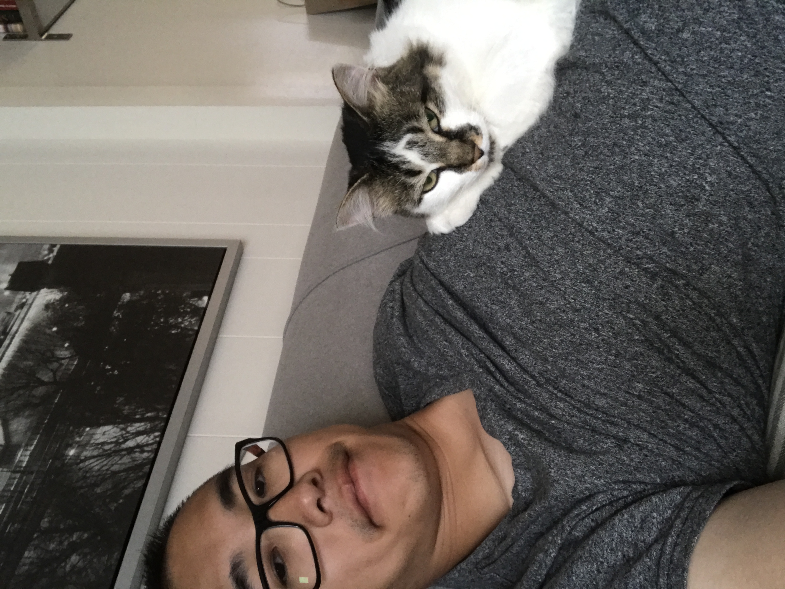

Felix Zhang
About Me
Hi, my name is Junhao, my friends call me Felix. Following paragraph are copied from my previous resume/profile.
CUSTOMERS SERVERS SPECIALIST, AUDI SEATTLE, SEATTLE - 2018,2019 Have not write anything yet... TO BE CONTINUE
SCHOOL AGE TEACHER, YMCA, SHORELINE — 2016, 2017 Trained and work as a schoolteacher for Edmond school district in before and after school programs and summer camp. Interact with other teachers and parents to maintain healthy relationship and provide safe environment for students. Working through YMCA, I have learned many useful skills outside of education such as food preparation, CPR, First aid, event planning etc..
PAINTER, BILLIET SERVICES INC., SEATTLE — SUMMER 2013 Worked summer job as a painter for a local contractor. I painted exteriors of buildings as assigned by my supervisor. This job required close attention to detail and on the spot problem solving as various issues arrived. Working as part of a team to deliver the highest quality paint job in the most efficient way allowed me to exercise my interpersonal skills and develop a collaborative working environment.